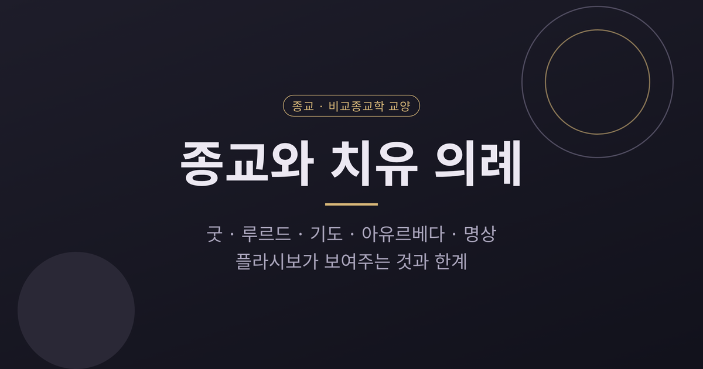
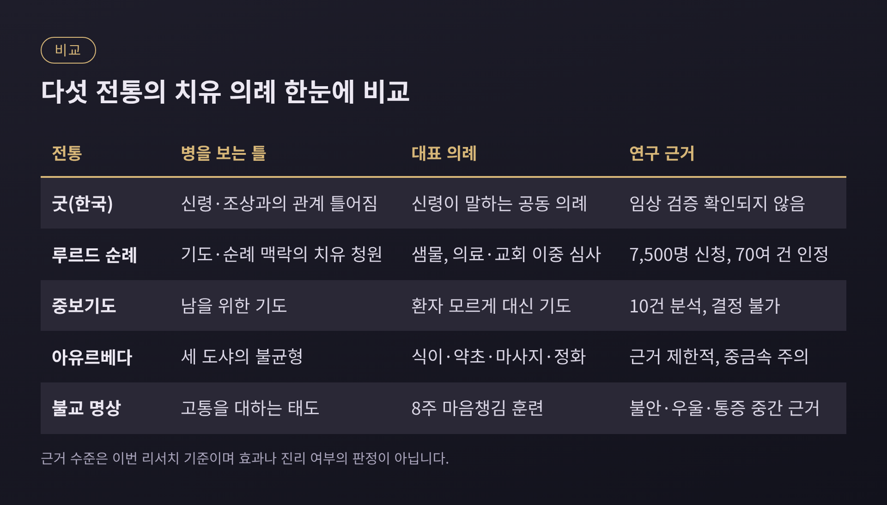
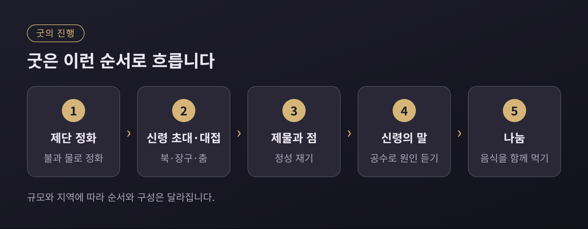
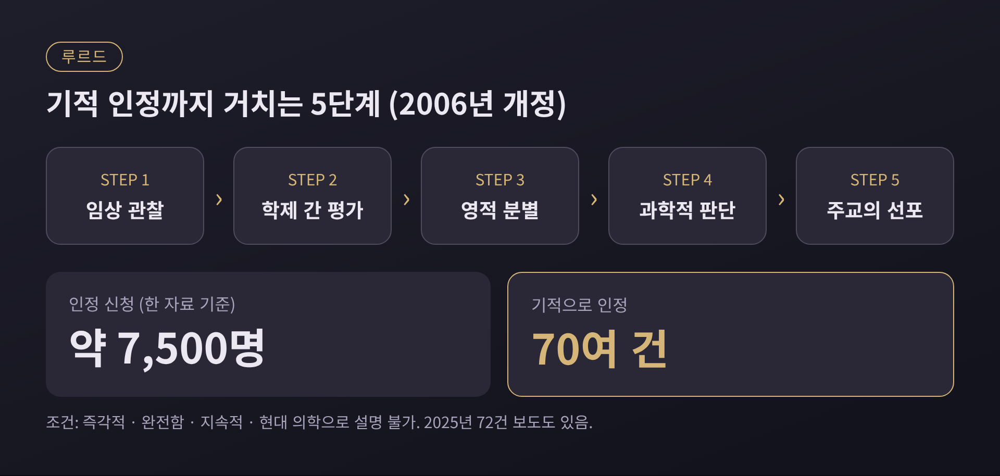
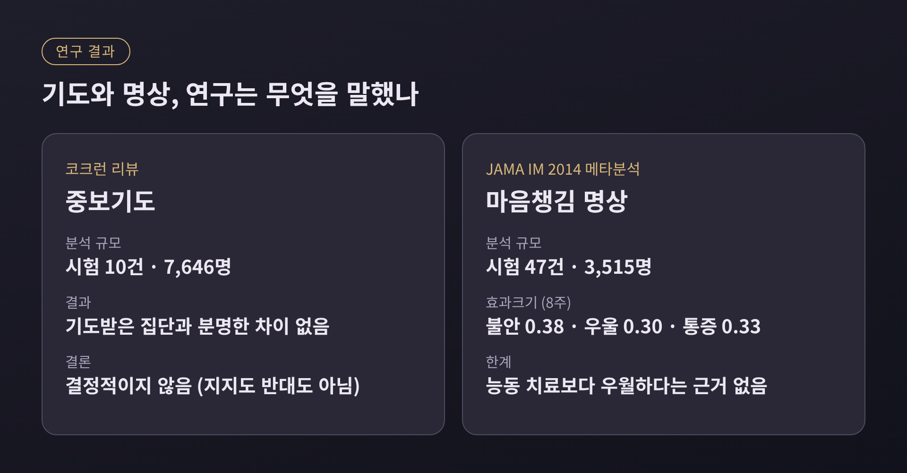
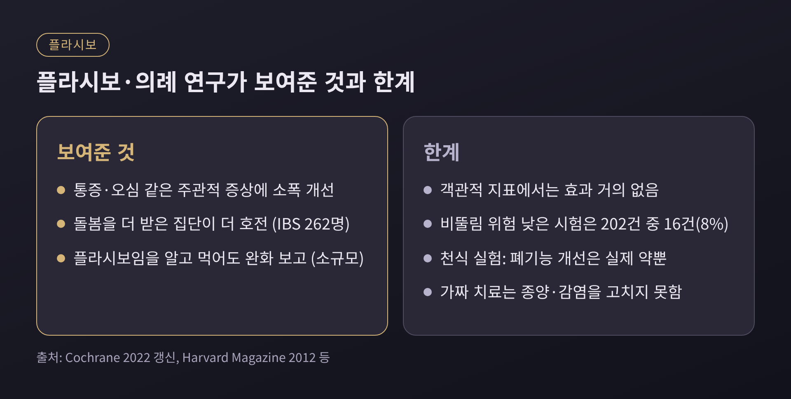

오늘은 종교가 아픔을 다루는 방식을 비교해 보려 합니다. 한국의 굿, 루르드 순례, 기도, 아유르베다, 불교 명상을 나란히 놓고 플라시보·의례 효과 연구가 무엇을 보여주는지 살펴봅니다.
먼저 결론부터 적겠습니다. 연구는 돌봄의 의례가 통증처럼 사람이 느끼는 증상을 어느 정도 바꿀 수 있음을 시사합니다. 그러나 종양을 줄이거나 감염을 치료한다는 근거는 아닙니다.
이 글은 어느 신앙이 옳은지를 가리지 않습니다. 의례가 사람에게 어떤 일을 하는지를 비교종교학의 눈으로 정리할 뿐이며, 의학적 치료를 대신할 수 없습니다. 몸이 아프시다면 반드시 의료진과 상담하시길 권합니다.
치유는 어느 문화에서나 종교의 오래된 몫이었습니다. 다만 병을 보는 틀이 전통마다 다릅니다.
굿에서 병은 신령과의 관계가 틀어진 일입니다. 아유르베다에서는 몸의 균형이 깨진 상태입니다. 불교 명상은 고통을 대하는 마음의 태도를 훈련합니다. 루르드에서는 병이 기도와 순례의 맥락 속에서 다뤄집니다.

한 가지 짚어 둘 점이 있습니다. '샤머니즘'이라는 용어 자체가 서구 학계가 만든 범주라는 비판이 있고, 북미 원주민 등은 이 말을 쓰지 않습니다. 이 글에서는 한국의 굿이라는 구체적 사례를 중심에 두겠습니다.
굿은 노래와 춤, 신탁, 기도로 이어지는 대규모 의례입니다. 며칠간 계속되기도 합니다. 대개 의뢰인의 병, 가족 갈등, 금전 손실 같은 구체적 사정이 계기가 됩니다.
굿의 목적은 신령이 직접 말하게 하는 것입니다. 무엇을 원하는지, 왜 노했는지를 듣고 풀어 줍니다. 조상과 신을 소홀히 한 일이 고통의 일차 원인으로 여겨지고, 억울하게 떠도는 영혼도 탈을 낸다고 봅니다.

진행은 이렇습니다. 불과 물로 제단을 정화하고, 무당이 신령을 청해 북과 장구, 춤으로 대접합니다. 제물을 신이 받았는지 점으로 확인하고, 의례가 끝나면 둘러앉아 음식을 나눕니다. 환자 한 사람의 증상이 아니라 가족과 이웃이 함께 참여하는 자리가 됩니다.
인류학자 로럴 켄들(Laurel Kendall)의 1988년 논문은 흥미로운 장면을 보여줍니다. 한 만신이 입무 몇 해 뒤 평범한 불운을 겪고, 동료의 조언을 받아 스스로 치유의 길을 찾아간 이야기입니다. 이 논문은 무당이 의뢰인과 다르지 않은 존재이며, 둘이 체험과 의례, 대화를 통해 현실을 공유하게 된다고 논합니다.
여기에는 아쉬운 점도 있습니다. 굿의 임상적 효과를 검증한 대규모 통제 연구는 이번 조사에서 확인하지 못했습니다. 일부 의뢰인은 의료 치료에 만족하지 못해 무당을 찾는다고 하는데, 그럴수록 병원 진료와 병행하는 판단이 중요해집니다.
루르드는 1858년 첫 발현 이후 샘물을 마시고 씻으며 기도하는 순례지가 되었습니다. 해마다 수백만 명이 찾습니다. 교회는 물을 마시고 씻는 것은 허용하되, 물 자체의 치유력에 대해서는 공식 입장을 취하지 않습니다.
흥미로운 부분은 심사 구조입니다. 의사들이 '의학적으로 설명 가능한가'를 판단하고, 교회가 '기적인가'를 판단합니다. 두 질문을 나눠 다루는 셈입니다.

2006년에 개정된 절차는 임상 관찰, 학제 간 평가, 영적 분별, 과학적 판단, 주교의 선포 순으로 진행됩니다. 조건은 엄격합니다. 치유는 즉각적이고 완전하며 지속적이어야 하고, 현대 의학으로 설명되지 않아야 합니다. 한 자료에 따르면 약 7,500명이 인정을 신청했고, 기적으로 인정된 것은 70여 건입니다. 2025년에는 72건이라는 보도도 있습니다.
이 숫자를 어떻게 읽을지는 입장에 따라 갈립니다. 교회 측은 정의가 엄격해서 인정이 적을 뿐, 기록되지 않은 치유도 있을 수 있다고 설명합니다. 회의적인 연구자들은 자연 회복, 오진, 심인성 요인, 암시로 설명할 수 있다고 봅니다. 2014년의 한 논문은 최근 사례 중 일부가 진짜로 보이지만 플라시보와 자기암시가 작용했을 수 있다고 덧붙였습니다. 방문자 300만 명당 한 건이라는 추산도 있으나, 건강한 방문자까지 분모에 넣었다는 반론이 따릅니다.
어느 쪽이 맞는지 이 글은 판정하지 않습니다. 다만 '신청 수천 건에서 인정 일흔 건 남짓'이라는 걸러내는 과정 자체가, 의학과 신앙이 한 장소에서 대화하는 드문 사례라는 점은 분명합니다.
기도가 환자를 낫게 하는지를 직접 실험한 연구들이 있습니다. 환자 모르게 다른 사람이 대신 기도해 주는 '중보기도' 시험입니다.
코크런 리뷰는 무작위 시험 10건, 참가자 7,646명을 분석했습니다. 기도받은 집단과 그렇지 않은 집단 사이에 회복이나 사망에서 분명한 차이가 없었습니다. 결론은 '결정적이지 않다'였습니다. 중보기도를 지지하지도, 반대하지도 않는다는 뜻입니다.
2006년 심장수술 환자를 대상으로 한 STEP 시험도 유의한 차이를 찾지 못했습니다. 일부 기도자는 정해진 대본의 기도가 평소 자신의 기도와 다르다고 이의를 제기했습니다. 2000년의 한 메타분석은 23개 연구 중 13건에서 긍정적 결과를 보고했지만, 이후 분석들은 가장 엄격한 연구일수록 효과가 사라진다고 지적했습니다.
신학적 이의도 있습니다. 기도는 측정할 수 있는 대상이 아니며, 실험이 된 기도는 이미 기도가 아니라는 견해입니다. 반대로 연구가 가벼운 자연 회복성 질환만 본다는 비판도 있습니다.
한편 기도하는 사람 자신에게 일어나는 변화는 다른 문제입니다. 묵주기도와 만트라 암송이 심혈관 환자의 압수용체반사 민감도를 높였다는 연구가 있습니다. 남을 위한 기도의 효과와 기도하는 이의 몸에 생기는 변화는 구분해서 읽어야 합니다.
아유르베다는 인도의 전통 의학입니다. 바타, 피타, 카파라는 세 가지 도샤의 균형을 건강으로 봅니다. 문진과 눈, 혀, 맥 관찰로 체질을 살피고 식이, 약초, 마사지, 요가, 정화 요법을 처방합니다.
평가는 엇갈립니다. 비판하는 쪽은 도샤 이론이 과학적 토대가 없고 연구의 질이 낮다고 봅니다. 지지하는 쪽은 인도와 네팔에서 국가가 지원하며 많은 사람이 현대 의학과 병행한다고 설명합니다. 미국 국립보완통합건강센터(NCCIH)는 잘 설계된 시험이 적고 대부분 소규모라고 정리합니다. 2013년 무릎 골관절염 환자 440명 시험에서는 두 가지 식물 추출 제형이 기존 약과 비슷한 통증 완화를 보였으나, 예비 성격의 결과입니다.
더 중요한 것은 안전 문제입니다. 일부 제제에서 납, 수은, 비소가 검출되었습니다. 2015년 조사에서 아유르베다 제제 사용자의 40%가 혈중 납이 높았습니다. NCCIH는 이 요법을 이유로 일반 진료를 미루지 말라고 권고합니다.
반면 불교 명상은 연구가 가장 많이 쌓인 영역입니다. 존 카밧진이 1979년 매사추세츠 의대에 스트레스 감소 클리닉을 세우며 마음챙김 기반 스트레스 감소(MBSR) 프로그램이 시작되었습니다. 불교 수행에 뿌리를 두되 프로그램은 세속적으로 짰고, 8주 과정으로 운영합니다.
2014년 JAMA Internal Medicine에 실린 메타분석은 시험 47건, 참가자 3,515명을 분석했습니다. 불안(0.38), 우울(0.30), 통증(0.33)에서 중간 수준의 근거로 개선이 확인되었습니다. 효과크기는 크지 않았고, 3~6개월 뒤에는 불안이 0.22, 우울이 0.23으로 줄었습니다. 약물, 운동, 행동치료보다 낫다는 근거는 없었습니다.

마음챙김의 세속화를 둘러싼 논쟁도 있습니다. 론 퍼서와 데이비드 로이는 마음챙김이 불교의 윤리와 철학에서 떨어져 나와 상품화되었다고 비판했습니다. 이에 맞서 임상 프로그램이 풍부한 내용을 담고 있으며, 문제는 접근성과 8주 이후의 공동체 부재라고 보는 견해도 있습니다.
플라시보는 약리 작용이 없는 치료를 뜻합니다. 그런데 하버드의 테드 캅척(Ted Kaptchuk)은 이 효과를 '의례'의 구성 요소로 쪼개어 연구해 왔습니다.
대표적인 것이 과민성장증후군 환자 262명을 대상으로 한 실험입니다. 대기군, 최소한의 상호작용만 하는 가짜 침, 20분 이상 따뜻하게 돌봐 주는 가짜 침으로 나누었습니다. 돌봄을 가장 많이 받은 집단이 가장 많이 호전되었습니다. 정성이 용량처럼 작용한다는 첫 증거로 소개됩니다.
또 다른 연구에서는 환자가 '플라시보 알약'임을 알고 먹었는데도 무치료군보다 약 두 배의 증상 완화를 보고했습니다. 다만 소규모였고, 2021년 11개 연구의 메타분석도 효과가 있으나 다소 작고 연구가 초기 단계라고 평가합니다.
여기까지는 의례를 긍정하는 근거입니다. 그러나 한계도 같은 무게로 읽어야 합니다.

2022년 갱신된 코크런 리뷰는 60개 질환에서 플라시보와 무치료를 비교한 202개 시험을 분석했습니다. 환자가 직접 보고하는 통증(표준화 평균차 약 -0.28)과 오심(약 -0.25)에서 소폭 효과가 있었지만, 시험마다 편차가 컸습니다. 관찰자가 평가하거나 객관적으로 잴 수 있는 결과에서는 효과가 거의 없었습니다. 비뚤림 위험이 낮은 시험은 16건, 전체의 8%에 불과했습니다. 환자가 보고한 호전이 진짜 생리적 변화인지, 보고의 편향인지 구분하기 어렵다는 뜻입니다.
2011년 천식 실험은 이를 극적으로 보여줍니다. 환자 40명에게 실제 흡입기, 가짜 흡입기, 가짜 침, 무치료를 번갈아 적용했더니, 폐기능이 객관적으로 나아진 것은 실제 약뿐이었습니다. 그런데 환자가 느끼는 호전은 실제 약과 가짜 치료에서 차이가 없었습니다. 기분이 나아지는 동안 호흡이 나빠지면 치료가 늦어질 수 있습니다.
연구자 자신도 선을 긋습니다. 캅척은 가짜 치료가 종양을 줄이거나 바이러스를 치료하지는 못한다고 말합니다. 기만이 필요한 플라시보는 임상에서 권하지 않으며, 지금 당장 적용할 수 있는 것은 시간, 경청, 접촉 같은 '돌봄의 의례'라고 합니다.
다섯 전통은 겉으로 달라 보여도 겹치는 구조가 있습니다. 아픈 이의 이야기를 들어 주고, 공동체가 함께하며, 고통에 의미를 부여하고, 정해진 절차로 몸과 마음을 다룹니다. 연구가 포착한 '돌봄의 의례'와 닮은 요소들입니다.
반대로 다른 점도 뚜렷합니다. 근거가 가장 쌓인 것은 명상이지만 효과는 중간 수준에 그치고, 기도는 결정적이지 않다는 결론이며, 굿은 임상 검증 자체가 확인되지 않습니다. 아유르베다에는 중금속 위험이라는 실질적 안전 문제가 있습니다.
정리하면 이렇습니다. 의례는 아픈 사람의 경험을 바꿀 수 있지만, 질병 자체를 대신 고쳐 준다는 증거는 아직 없습니다.
끝으로 한 마디만 덧붙이겠습니다. 의례와 의학은 서로를 밀어내는 관계가 아니라, 한 사람의 고통을 서로 다른 방향에서 다루는 관계일 수 있습니다. 그렇다면 어느 한쪽을 택하라는 질문보다, 둘이 어떻게 만날 수 있느냐를 묻는 편이 더 쓸모 있지 않을까요.
※ 이 글은 비교종교·종교학 교양을 위한 글이며 특정 신앙을 옹호하거나 비판하지 않습니다. 의학적 진단과 치료를 대신할 수 없으니, 건강 문제는 반드시 전문 의료진과 상담하시기 바랍니다.